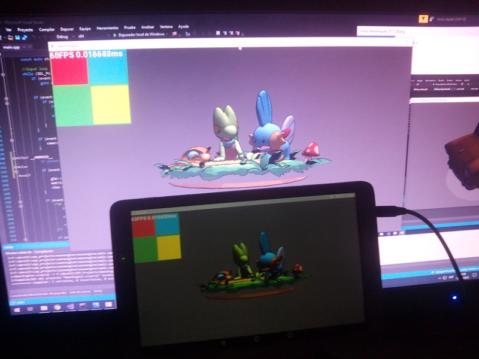

Fluent (reading, writing, listening and speaking) in 3 languages: Spanish, Catalan and English.
Knowledge of the following general purpose programming languages: C++, C#, C, Rust, Zig, LUA, GDScript, GML, Java, PHP, Python, JavaScript.
Knowledge of shading languages like GLSL and HSLS.
Knowledge of markup languages like HTML and CSS.
Knowledge of serialization formats like JSON, XML and YAML.
Knowledge of game engines like Godot, Unity and Unreal.
Knowledge of networking sockets UDP and TCP and related concepts like the HTTP protocol, NAT Traversal/Punch, data serialization and replication etc.
Knowledge of authoritative server game netcode with client side prediction, matchmaking server that can spawn virtual game server instances on demand.
Knowledge of data handling like user accounts (With their passwords stored securely by using battletested hashing algorithms like blowfish) and SQL and NoSQL databases.
Knowledge of OpenGL and other GPU rendering drivers like DirectX and Vulkan.
Knowledge of rendering pipeline concepts like deferred rendering with a gbuffer including depth, normals, diffuse, ambient occlusion etc.
Knowledge of mesh concepts like vertices, vertex indices, vertex colors, UVs, vertex weights etc.
Knowledge of math related concepts like vectors, matrix/transforms, rotations/quaternions.
Knowledge of the source code version control systems like Git.
And many more, as you may see in some of the projects in the portfolio.
Contact
My contact email is thimenesup@gmail.com
Portfolio
These are some of my projects. Only some of them have its source public, you may contact me for the source code of the private projects.
Battle Arena
Multiplayer online battle arena combat where you build the way your character fights by selecting from a variety of abilities to defeat your foes.
With a matchmaking server that allows people to find its desired match depending of region, game mode or MMR and even with the option to party with friends.
The server is able to spin up dedicated server game instances using cloud services or make players host the game with the help of NAT Traversal/Punch so clients dont need to do port forwarding.
It also uses Steam integration, which is optional and the service may work without it, you can also replace it with a custom authentication solution etc.
The netcode of the game works as an authoritative server.
Sparse Voxel Octree
A sparse voxel octree, using ray tracing for rendering with adjustable depth level of detail.
Really useful to represent and modify at runtime volumetric data of big sizes, unlike regular array based voxel approaches.
The project also includes a mesh voxelizer, to convert regular triangle meshes to voxel data.
The voxels contain primarily color and normal data, and can be easily expanded to contain other desired vertex attributes from said mesh like UVs,
that are already used to sample the provided mesh texture to determine the voxel color.
Its implemented in two versions, one being a classical approach of having nodes being heap allocated and them containing raw pointers to children,
the other one being stored as a packed array of nodes, with nodes having a bitwise mask for childs which are stored contiguously in a breadth first manner, to considerably minimize memory usage.
The format for loading and saving is extremely compact due to it using the same approach, which also supports streaming/loading at different level of detail.
Turn Based Grid Battler
Turn based grid battler, with authoritative networked multiplayer and local play.
The combat is based on CRPGs, where the turn flow is determined by each unit initiative and layed out visually,
units can then perform actions spending action points to use abilities or move around the grid before ending their turn.
Grid movement pathfinding is done with A* and it supports any arbitrary radius for units and obstacles, unlike other games which are limited to a uniform size of one.
It also has been made to allow players to manually input and trace their own desired movement path, in case the automatic one given by the pathfinding isn't desired,
and it is ensured to be a valid one by the server.
Neon Engine

My C/C++ toy engine where I made my custom Variant class that I used to write my own JSON serializer that only depends on the C++ standard library, which I tested by making my own glTF scene importer.
Also implemented a property and method reflection system that allows easy serialization of objects.
I also implemented my own GUI solution with control rectangles that are interactable with inputs like buttons, sprites/meshes and text which is editable.
The OpenGL ES 3.0 renderer handles frustum culling and mesh/material/drawcall batching, with skinned meshes and animations, has ambient and directional lighting with shadows.
I also wrote a CPU/software rasterizer/renderer that could be used as a fallback for platforms that dont have GPU accelerated graphics.
It also has been ported to run on Android devices.
ECS Data Oriented Test
This project is based on Unity's AngryBots ECS, implemented in C++ and with multithreading using OpenMP. Featuring a storagement class where structures
are layed out in a packed array instead of the traditional heap allocated objects traversed in a tree fashion, for maximum cache coherency and minimal memory re/allocations.
This results in extremely fast object creation, deletion, and processing. Allowing you to have hundreds of thousands of bullets at runtime.
Project that uses the Win32 API to implement a desktop window that sits behind the icons, it can handle toggleable mouse and keyboard input to provide interactive user experiences.
It uses system notification trays to close the window, and can set itself to boot automatically on start by using the Windows registry keys.
Model Painter
Simple GPU based mesh texture painter, it uses a deferred-render-like approach where it rasterizes the UV coordinates of the triangle mesh to a framebuffer,
which are then sampled under the cursor to determine the texture coordinates we want to modify.
Fez Clone
This project features a recreation of the main mechanic of the indie game "Fez".
The kinematic character collision movement was also reimplemented to add support for single sided 3D colliders like classic 2D platformers have.
Battle Network
Realtime card-fighting-in-a-grid game. Build your own decks, and try them against the AI machine, local multiplayer or online.
With a replay system where you can view past games. Also features the option to make your own character and display it online.
Duel Doppel
This project is a clone of Duelyst, which was done after the anouncement of the game closing down was made.
It implements all the core mechanics of the game and its only matter of extending the cards with the keywords and spells.
Its playable locally or online multiplayer, with an authoritative server netcode.
Hack and Slash
Third person action hack and slash project, with enemies, and an inventory with items you can pickup/drop and equip. Everything is networked, authoritative server.
Godot Networked Editor Plugin
Godot plugin that allows people to remotely connect over the network and edit scenes at the same time, increasing productivity a lot when working in a group.
Really useful for designing maps and even UI elements. I made it work with minimal engine source code changes to preserve compatibility and prevent things breaking
while also at the same time preserving the same workflow you use to edit scenes regularly.
Godot util where you can export a game data pack with stripped resources like meshes, textures, sounds, etc...
Ideal for games that rely on a dedicated server hosted on the cloud.
A multiplayer online battle royale game about planes made of paper, where you will grab random items to ensure that you are the last survivor. Authoritative server.
Sortoutmatic
A small game project done in a day about sorting objects by tags for Android.